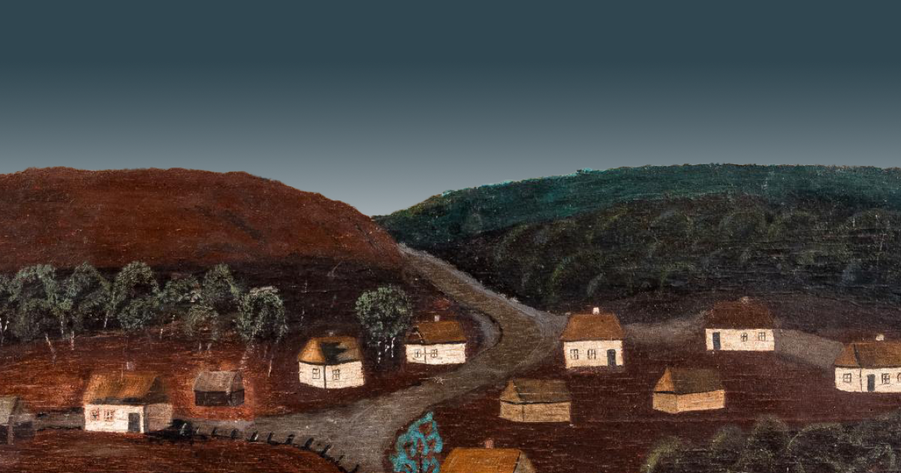

Поняття традиційної культури
Ярослава Музиченко пояснює, що у ХІХ столітті в Європі почали формуватися модерні нації, ідентичність яких базувалася на традиційних культурах. Фольклор, звичаї, календарна і родинна обрядовість, народний одяг, кухня є складовими традиційної культури, яка відрізняє один народ від іншого. Це допомагає народам засвідчити свою окремість, але при цьому різні культури можуть мати спільні риси. «У святкуванні Різдва є подібні елементи майже у всіх європейських народів, при тому кожному народу притаманні свої особливості. Комплекс цих особливостей, що складається з народних свят, мистецтва, вбрання, пісень, казок тощо, є традиційною культурою етносу, записують етнографи», — пояснює Музиченко.
Українська традиційна культура формувалася тисячоліттями. До її комплексу входять не лише слов'янські традиції, але й елементи культур племен і народів, які проживали на території України раніше. Так в українській культурі є традиції, які тягнуться ще з неоліту, до прикладу, гончарство.
Становище української культури в радянський період
Ярослава Музиченко пояснює, що в період СРСР українська традиційна культура зазнала кілька хвиль трансформацій. Влада залишала спотворену національну форму, у яку вкладала потрібний для «комуністичного виховання» зміст. Перша така трансформація відбулася у 20-х роках ХХ століття.
Науковиця пояснює, що у 20-ті роки радянська влада дозволяла святкувати Різдво, але називали його «комсомольським». Тоді колядники ходили по домівках лояльних до влади людей з п'ятикутною зіркою, а замість того, щоб отримувати «коляду», навпаки приносили дарунки господарям.
Ще одним свідченням того, що радянська влада підмінювала традиційну українську культуру, є зникнення явищ кобзарства та лірництва, але натомість поширювались капели бандуристів.
«У 30-х роках минулого століття “неконтрольовані” кобзарі перестали ходити по селах. Тих, які залишилися після Голодомору і репресій, стали збирати у капели бандуристів, які зі сцени співали пісні про комуністичну партію. Ці пісні називали “народними”, а їх перелік був суворо цензурований», — додає дослідниця. Голодомор 1932-1933 років також мав наслідки для української культури, оскільки після нього людям було не до святкувань. До того ж радянська влада формувала зневажливе ставлення до традиційних свят.
Відродження української культури і війна
У 1989 році, коли тиск тоталітарної держави послаблювався, а визвольний рух українців посилювався, стала відроджуватися і народна культура. «У перші роки незалежності у школах запровадили предмет “Народознавство”, з'явилася велика кількість часописів і дослідницьких праць про традиційну культуру», — розповідає Музиченко.
«З'явилася велика кількість завезеної з Росії літератури, яка формувала псевдопатріотичне ставлення до культури. Тим часом українська держава припинила виділяти кошти на видання народознавчих книжок і часописів», — розповідає науковиця. У 2005 році відбувся новий культурний «спалах», коли в моду увійшли вишиті сорочки, а деякі українські зірки почалися організовувати фестивалі, як «Країна мрій» Олега Скрипки. Музиченко пояснює, що повномасштабне російське вторгнення сильно вплинуло на ставлення українців до традиційної культури.
Сприйняття традиційної культури українцями
У всіх нас є власні образи і матриці сприйняття традиційної культури. На це впливають різні чинники – родина, культурні та музейні інституції, телебачення та інтернет.
Якщо ж звернутися до телебачення, інтернету, як зараз іноді подають культуру, то це переважно забобони, прикмети, щось таке, що має вразити і привернути увагу людей. І під цим соусом афекту сильних вражень можна давати різні речі, які спотворюють уявлення про традиційну культуру. Ми знаємо закони пропаганди: щоби донести в підсвідомість якусь думку, треба емоційно вплинути на людину – або застрашити, або дати картину майбутнього щастя.
Як зберегти традиційну культуру?
На думку Ярослави Музиченко, щоб зберегти традиційну українську культуру, потрібно створити якісні наукові дослідження та популяризувати їх. Громадянське суспільство має тиснути на державу, щоб та зробила запит на такі дослідження тематики. Потрібно створити якнайповніший фоноархів українського фольклору, електронні каталоги музейних колекцій народного мистецтва та інтерактивні онлайн-атласи ареалів етнокультурних явищ, відкрити їх у вільному доступі для всіх охочих, а також на їх основі розробити освітні програми.
«У таких атласах можна було б знайти інформацію про те, який одяг переважає у конкретному регіоні, які пісні, казкові сюжети, самобутні обряди календарних чи родинних свят походять з того чи іншого регіону», — зазначає дослідниця. Ярослава Музиченко наголошує:
Україна – країна, де зустрічаються історія та майбутнє, де традиція переплітається з інновацією
Дякую за увагу!